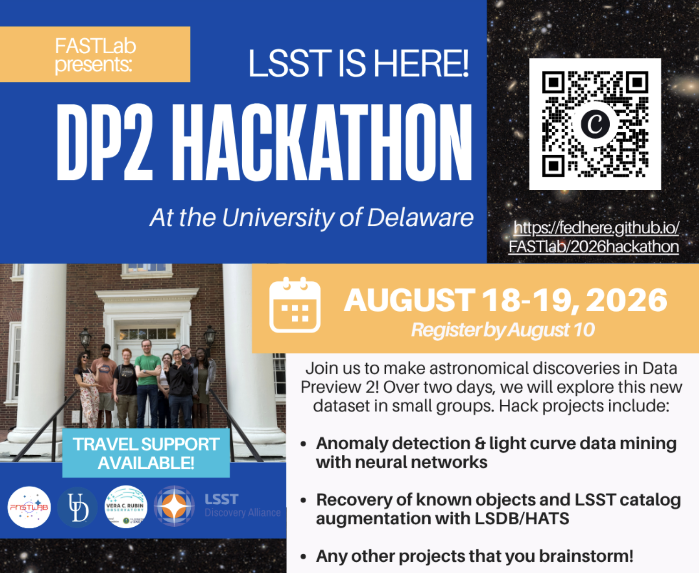

FASTLab presents
LSST is here! DP2 Hackathon
Two day hackathon on Rubin Observatory's LSST Data Preview 2 — we will explore the new data, and discover objects from transients and variable stars to brown dwarfs while making new collaborations!
Registration closed on August 10, 2026. Travel support is available. Participants should be Rubin data rights holders and bring a laptop.
Local Information
How to get here and settle in: the venue, travel information, parking, lodging within walking distance of campus, and where to eat in Newark. This list has been kept on a Google Doc and will be updated frequently. We encourage taking a train over a flight if you can!
Open in Google DocsRecommendations are welcome!
Agenda
Day 1
Tuesday, August 18
Day 2
Wednesday, August 19
Projects
After a morning of tutorials, participants will form small groups around hack projects. You're welcome to bring your own ideas, and some examples include:
- Anomaly detection & light-curve data mining with Hyrax
- Recovery of known objects & LSST catalog augmentationwith LSDB/HATS.
- Any other project you brainstorm
We plan on using in-house models like NightLANP and other machine learning models that attendees may bring and mining the neural representations to find unusual patterns and anomalies.
We plan to use crossmatched DP2 with ZTF, Gaia, and other relevant surveys and catalogs for transient and cool dwarf science within LSDB/HATS. We want to crossmatch catalogs of known ultracool dwarfs to leverage DP2’s depth and build a database for transients to produce training sets.
You can propose it on the sign-up form or even bring it in person :)
These two resources may help with planning the hackathon pitch before you arrive:
- How to pitch a project
What to think through ahead of time: the data you will need, your goals, and what a useful result would look like. - Pitch slide deck
Add a slide for your project so the group can see it on day one.
Registered Participants ()
- Koji Shukawa
- Xiaolong Li
- Nikoo Hosseininezhad
- Kyle Neumann
- Alex Malz
- John Mora
- Jun Yang
- Ayan Mitra
- Ena Chia
- Behzad
- Karen Daiana Nowogrodzki
- Jacen Nisbet
- Jenna Karcheski
- Somayeh Khakpash
- Mathilda Nilsson (OC)
- Ally Baldelli (OC)
- Shar Daniels (OC)
- Siddharth Chaini (OC)
- Easton Honaker (OC)
- Tatiana Acero Cuellar (OC)
- John Gizis (OC)
- Federica Bianco (OC)
Code of Conduct
We will be following the LINCC Frameworks Code of Conduct:
The LINCC Frameworks team is dedicated to providing an inclusive environment for all people. Our goal is to build an inclusive and successful community composed of, but not limited to, the LINCC Frameworks team, incubator participants, and collaborators. We expect all participating members of this community to follow these guidelines when interacting with others both inside and outside of our community.
This code of conduct applies to all community situations online and offline, including mailing lists, forums, social media, conferences, meetings, associated social events, and one-to-one interactions. Consequences for violations will depend on the situation and could ( if needed) include discontinuation of collaborative relationships or other significant consequences to preserve the inclusive collaborative environment that is our goal.
This code is adapted from the AstroPy code of conduct and is licensed under a Creative Commons Attribution 4.0 International License.
- We pledge to treat all people with respect and provide a harassment- and bullying-free environment, regardless of personal attributes, including but not limited to sex, sexual orientation and/or gender identity, disability, physical appearance, body size, race, nationality, ethnicity, politics, and religion. In particular, sexual language and imagery, sexist, racist, or otherwise exclusionary jokes are not appropriate.
- We pledge to respect the work of others by recognizing acknowledgment/citation requests of original authors. As authors, we pledge to be explicit about how we want our own work to be cited or acknowledged. Team members may make significant contributions to collaborative projects, and we expect that the work of team members and the role of the LINCC Frameworks team/incubator will be properly attributed in any related talks, publications, software releases, etc.
- We pledge to welcome questions and answer them respectfully, paying particular attention to those new to the community. We pledge to provide respectful criticisms and feedback in forums, especially in discussion threads resulting from code contributions.
- We pledge to be conscientious of the perceptions of the wider community and to respond to criticism respectfully. We will strive to model behaviors that encourage productive debate and disagreement, both within our community and where we are criticized. We will treat those outside our community with the same respect as people within our community.
- We pledge to help the entire community follow the code of conduct and not remain silent when we see violations of the code of conduct. We will take action when members of our community violate this code, such as contacting one of the LINCC Frameworks leadership team or talking privately with the person. Note that, due to mandatory reporting requirements, the leadership team may be required to report certain types of misconduct when they involve individuals at their own institutions. We pledge to act in good faith when reporting or discussing violations of the code of conduct and recognize that retaliation against anybody for making or discussing a report is itself a violation of this code. We strive to be good citizens of all groups in the LSST science community and beyond with which we engage, including abiding by their Codes of Conduct and other policies in interactions with them.
Updated: May 25, 2023
About
The Legacy Survey of Space and Time (LSST) has started at the Vera C. Rubin Observatory in Chile. Ahead of the full data release, the Rubin team is publishing Data Preview 2 (DP2) on July 27, 2026 — an early look at the survey's data.
Over the two day workshop at the University of Delaware, participants will work together in small groups to explore DP2 using LINCC Frameworks tools (Hyrax, LSDB, HATS) on the Rubin Science Platform. We especially welcome early-career researchers to join us at the University of Delaware.
